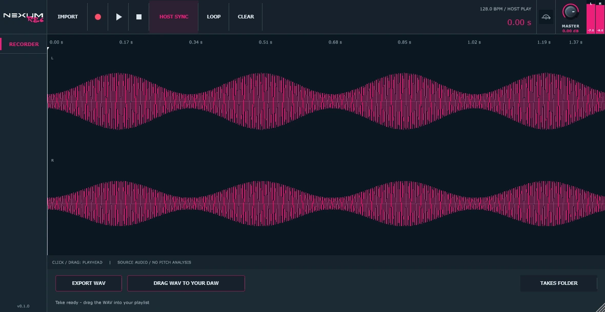

Record what reaches the insert.
Place Rec on a mixer track and capture the signal at that point in the chain. There is no pitch analysis, MIDI conversion or resynthesis. Mono and stereo audio are written directly to disk at the input sample rate.
MIXER-TRACK RECORDER
A focused recorder for the moment you want to keep. Capture the audio on your mixer track, follow the host timeline and drag the finished WAV straight back into the arrangement.

A CLOSER LOOK
Nexum Rec
Record → Preview → Drag out
Place Rec on a mixer track and capture the signal at that point in the chain. There is no pitch analysis, MIDI conversion or resynthesis. Mono and stereo audio are written directly to disk at the input sample rate.
With HOST SYNC enabled, Record requests host playback and waits for a playing audio block. If automatic start is unavailable, Rec stays armed until you press Play in the DAW. Host Stop, a seek or a loop wrap finishes the take.
32-bit float WAV preserves samples, including levels above 0 dBFS. The Master control changes monitoring, not the exported take. Free capture is available with HOST SYNC off, and in the standalone.
See a rolling live waveform during capture and the full waveform after stopping. Play, pause, stop or loop the take. Click or drag the waveform or ruler to move the preview playhead.
Grab DRAG WAV TO YOUR DAW and drop the file into the arrangement, or save it with EXPORT WAV. The recorded audio stays in the Takes folder; clearing the workspace does not delete it.
Disk streaming removes Tune’s 60-second recording buffer limit. Each take gets a unique file, with an automatic stop near 2,000 MiB. Import WAV, AIFF or FLAC if you want to preview and drag existing audio.
YOUR WORKFLOW
Add Rec to the mixer channel and press Record. Start the host manually if it cannot be started by the plugin.
Stop the host or finish capture in Rec. Check the take with the local waveform preview.
Drag out the WAV or export a copy. The audio remains available in the Takes folder.
DAW projects reference the saved take file rather than embedding it: include the WAV when moving a project. Rec’s Stop button finishes capture or preview; it does not stop or rewind the DAW. Local preview replaces the incoming signal while playing. Interactive FL Studio transport and drag-and-drop still need final user-session verification.
GET STARTED
A free, open-source plugin.
No account or subscription required.
Development build · packaged 07 Nov 2026 · Windows x64
Windows download Complete suite source · 07 Nov 2026 ↗Download and extract the Windows ZIP.
Copy the complete Nexum Rec.vst3 folder into your VST3 directory.
Rescan in the DAW and load Nexum Rec as a mixer effect. The EXE opens the standalone.
ALSO IN THE FAMILY